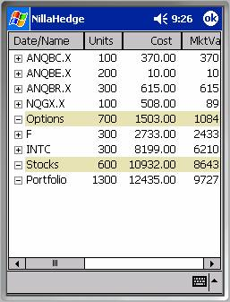
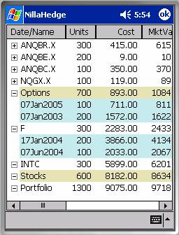
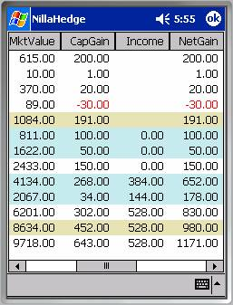
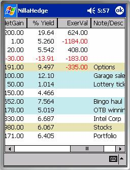

Portfolio NavigatorThe Portfolio Navigator is the second positions dialog in NillaHedge. It differs from the Positions Dialog in that it doesn’t allow you to close, delete, enter, or modify positions in your portfolio. Its purpose is to display positions and summarize your portfolio at various levels. The hierarchical display implements a folding spreadsheet whose branches can be expanded to obtain more detail or collapsed to a summary. The example at right depicts a portfolio containing positions in three Applied Materials options (ANQBC.X, ANQBE.X, ANQBR.X), one Intel option (NQGX.X), and two stocks (Ford and Intel). The position rows are initially invisible, so all you see at right are the issue summary rows and the total row for all bonds in the portfolio.

Expanding/Collapsing BranchesIf you click on the icon next to the symbol (identifier), individual positions
will be displayed above the issue’s summary row. For example, if you expand the ‘F’ and ‘INTC’
branches in the example above, you’ll get the display at left. Note that position rows always appear above the issue’s summary row, as you
might do if you were tallying the positions for each issue. To collapse a branch, just click on the
issue’s summary rowicon.
icon next to the symbol (identifier), individual positions
will be displayed above the issue’s summary row. For example, if you expand the ‘F’ and ‘INTC’
branches in the example above, you’ll get the display at left. Note that position rows always appear above the issue’s summary row, as you
might do if you were tallying the positions for each issue. To collapse a branch, just click on the
issue’s summary rowicon.
Row Background

ColorsThe summary rows for the Options folder and the Stocks folder have manila backgrounds, symbolizing manila folders. Position rows have a powder blue background - hopefully alliteration will serve as the mnemonic there. The portfolio summary row and issue summary rows and use a plain white background.
Columns
The Portfolio Navigator treats columns slightly differently than the Positions Dialog. The columns available are Date/Name, Units, Cost, MktValue, CapGain, Income, NetGain, % Yield, ExerVal, and Note/Desc. Dividend income contributes to the net gain. Net gain is the basis of the annualized yield calculation.
NetDate/Name and Note/Desc columns present information which depend on the row type. Position rows, display the purchase date in the Date/Name column and the Note you entered when you created the position in the Positions Dialog in the Navigator’s Note/Desc column.

Issue summary rows display the issue’s symbol in the Date/Name column and the description you created in the instrument definition dialog in Navigator’s Note/Desc column. Columns can be reordered using tap and drag, but sorting is not currently available. You can use Positions List Options to prevent some columns from being displayed. The default is for all columns to be visible.
In this example, the annualized yield for the portfolio as a whole is 6.405%.
Note: Purchase prices and dividend rates in this example are entirely fictional.